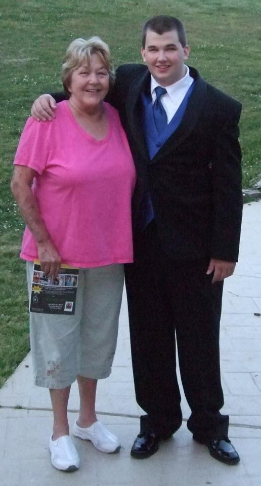
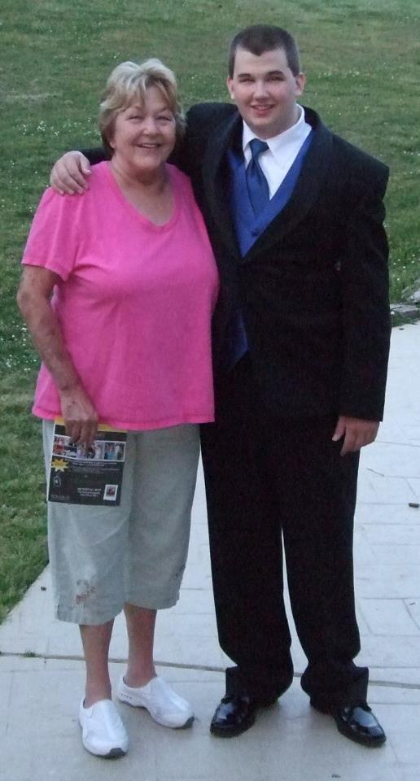

Employee Spotlight: Preston Williamson
Teaching his mother how to properly type on the keyboard at only the age of six, it is a no-brainer why Preston Williamson is in the spot he is today: Technical Lead for CDW's SPS Team. Having been with Oras for more than a year, Preston has been a key player for and one of the many driving forces behind, the CDW project. Preston has many responsibilities on CDW, all of which are performed with the utmost standards and with a keen attention to detail; technical reviews of the team's automated testing to comply with client audit-readiness standards, monthly regression testing support, and new resource on-boarding ramp up, to name a few.
Preston enjoys spending time with his dog Vegas at the park, playing N-64 video games, hitting the gym, and hanging out with his friends. Preston graduated from Forsyth Technical Community College in 2012 with an Associate Degree in Computer Programming, and he plans to attend school in the near future to receive a Bachelor's Degree in Computer Science. Preston's enthusiasm, optimistic attitude, and diligent work ethic are some of the many qualities that make him a valuable Orasi family member.
"Since arriving to Orasi, Preston's been quick in demonstrating expert level proficiency in the tools and has consistently applied himself to our project making significant contributions to our team's continued success. As one of the youngest consultants at Orasi, he's proven to be an asset to the project and I'm sure his technical aptitude would translate well to new tools and projects." - Alfredo Gonzalez, CDW SPS Team Lead.
 
